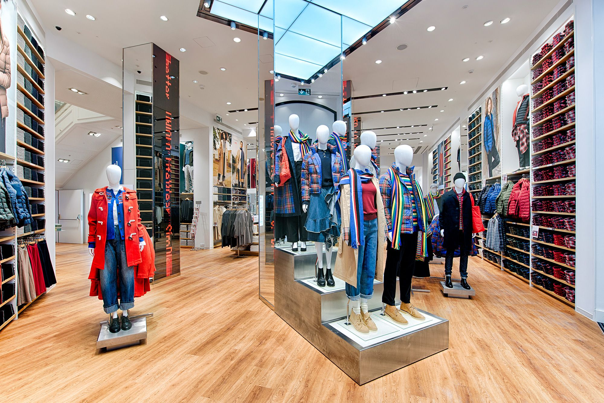

UNIQLO
Esta es la nueva casa de los diseños de la marca japonesa más conocida a nivel internacional, básicos de diseño minimalista de muy buena calidad a precios sorprendentes. Y grandes colaboraciones, como la colección de otoño-invierno de J.W. Anderson que ya ha sido todo un éxito.